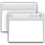
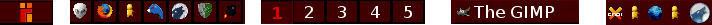

Fenstermanager
 Ein Fenstermanager ist in erster Linie dafür zuständig, den Anwendungsprogrammen einer Desktop-Umgebung das Verschieben, Minimieren, Vergrößern und Schließen von Fenstern zu ermöglichen. Im Gegensatz zu den Betriebssystemen von Apple und Microsoft hat man sich beim X Window System bewusst dafür entschieden, diese Funktionen getrennt zur Verfügung zu stellen. Somit kann der Benutzer zwischen einer Vielzahl von Alternativen wählen, um die beste Lösung für seine Bedürfnisse zu finden.
Viele Anwender sind sich gar nicht bewusst, dass sie hier eine Wahl haben. Deswegen werden im Folgenden die möglichen Funktionen und Bestandteile eines Fenstermanagers vorgestellt.
In Ubuntu bzw. bei Unity kommt standardmäßig Compiz als Fenstermanager zum Einsatz. Ubuntu GNOME setzt auf Mutter, Kubuntu auf KWin, Xubuntu auf Xfwm und Lubuntu bzw. LXDE auf Openbox.
Fenstermanager¶
3D-Fenstermanager¶
Siehe auch 3D-Desktop.
Compiz - beeindruckende Effekte, Standard bei Unity, der Oberfläche von Ubuntu
CompizConfig - umfangreiches Werkzeug zur Konfiguration von Compiz
Arbeitsflächeneffekte - 3D-Effekte für KDE mit KWin
GNOME Shell - 3D-Desktop von GNOME 3
MATE-Tweak - 3D-Konfiguration bei MATE
Xfce Composite-Effekte - 3D-Effekte für Xfce
Desktop-unabhängige Fenstermanager¶
E17 - moderner Neubau von Enlightenment und Nachfolger von E16
Fluxbox - der etwas "andere" Fenstermanager
IceWM - der "Coole"
JWM - Joe's Fenstermanager
Openbox - ein aus Fluxbox entstandener Minimalist, Standard bei LXDE
Pekwm - schlanker, funktionsreicher Fensterverwalter
WindowMaker - ein NeXTStep ähnlicher Nachbau
Tilingfähige Fenstermanager¶
Tiling (vom englischen "tile", was soviel wie Kachel/Fliese bedeutet und "tiling" somit "Kachelung" - der mathematischere Ausdruck ist "Parkettierung") bezeichnet die Flächenaufteilung einer Ebene ohne Überlappungen. Dieses Prinzip gehörte bei Fenstermanagern eigentlich schon zum alten Eisen (es kam bereits in den 80ern zum Einsatz), bis im Jahr 2000 – mit LarsWM und Ion – gleich zwei Fenstermanager veröffentlicht wurden (und damit viele weitere inspirierten), die mit dem verbreiteten Prinzip der Fensterverschiebung, und der damit einhergehenden ständigen Suche nach hintereinander liegenden Fenstern, brechen wollten.
Bei dieser Art von Fenstermanager hat man alle aktiven Fenster neben- bzw. untereinander angeordnet, sodass jedes komplett zu sehen ist. Die Benutzung der Maus beschränkt sich somit allein auf das Fokussieren - ein Vorteil liegt gerade darin, dass man prinzipiell alles mit der Tastatur steuern könnte, da man keinerlei Fenster mehr über den Desktop verschieben muss.
Die dritte Generation der Tiling-Fenstermanager leitete ab 2007 Awesome ein, der neben hohem Funktionsumfang und hoher Konfigurierbarkeit auch viele neue Standards unterstützt und momentan wohl der modernste Tiling-Fenstermanager ist.
Awesome - modern und erweiterbar
DWM - ein WMII-Ableger für Profis
herbstluftwm - vereint Eigenschaften von Ion3, WMII und anderen
i3
 - einfacher und verbesserter Fenstermanager
- einfacher und verbesserter FenstermanagerRatpoison - minimalistisch und schlicht
WMII - organisiert die Fenster mit Tags
xmonad - flexible und erweiterbar, auch ohne Desktop-Umgebung nutzbar
Erweiterung des Fenstermanagers¶
Composite nennt man die Fähigkeit, Fenster und Effekte auf dem Desktop miteinander zu kombinieren, meist mithilfe des Grafikkartentreibers. Dies ermöglicht Desktop-Effekte wie Schatten und Transparenz. In 3D-Fenstermanagern ist ein Composite-Manager bereits integriert, andere wie Openbox können nachträglich mit einem solchen kombiniert werden.
Compton - Abspaltung von xcompmgr, noch in aktiver Entwicklung
xcompmgr - Klassiker, der aber nicht mehr weiterentwickelt wird
Außerdem gibt es noch weitere Werkzeuge:
Brightside - die Ecken und Kanten von GNOME und Xfce nutzen (edge flipping)
Devil's Pie - Fenstereigenschaften dauerhaft beeinflussen
GTK+/Design wechseln - das GTK+-Design unabhängig vom Fenstermanager anpassen
Skippy-XD - Expose-Effekt für Xfce, LXDE und Openbox
wmctrl - Umfangreiche Manipulation von Fenstereigenschaften
xdotool - Manipulation von Fenstern, Bildschirmecken und -kanten
Design¶
Bei fast allen Fenstermanagern kann man das Aussehen ändern, indem man ein neues Design auswählt. Dadurch werden meist mindestens die vorherrschenden Farben, der Stil der Fensterdekoration und die Schriftart ausgewechselt.
Erweiterung der Arbeitsfläche¶
Nahezu jeder Fenstermanager bietet die Möglichkeit, den verfügbaren Platz für Fenster virtuell zu erweitern. So kann man einen überfüllten Desktop besser vermeiden als nur mit dem Minimieren von Fenstern. Man kann sogar soweit gehen, diesen Bereichen bestimmte Funktionen zuzuweisen - beispielsweise liegt auf Desktop 1 der Dateimanager, auf 2 der Browser und auf 3 der Chat. Hierbei gibt es mehrere Ansätze, die im folgenden erläutert werden.
Virtuelle Desktops¶
Die am häufigsten anzutreffende Umsetzung der erweiterten Arbeitsfläche sind virtuelle Desktops. Hierbei werden einfach mehrere Arbeitsflächen zur Verfügung gestellt. Falls die Oberfläche, auf der man startet, aufgrund der vielen geöffneten Fenster zu unübersichtlich wird, kann man so bequem auf eine andere Arbeitsfläche ausweichen.
Viewports¶
Ein anderer Ansatz, der sich kaum von den virtuellen Desktops unterscheidet, sind die Viewports (zu Deutsch etwa "Sichtfeld"). Hier gibt es nicht mehrere Arbeitsflächen, sondern die eine Arbeitsfläche wird vergrößert, sodass sie nun über den sichtbaren Ausschnitt des Bildschirms hinausgeht. Diese Technik hat mit Compiz gewissermaßen eine Renaissance erlebt, denn beim Desktop-Würfel wird gewissermaßen eine große Arbeitsfläche um den Würfel herum gewickelt. Bei KWin wird der Würfel jedoch ohne das Konzept der Viewports realisiert, hier wird auf jeder Seite des Würfels ein virtueller Desktop gezeichnet.
Tags¶
Ein etwas abstrakterer Ansatz, der seltener und vor allem bei Tiling-Fenstermanagern zum Einsatz kommt, ist der der Tags. Hier können jedem Fenster ein oder mehrere Tags zugewiesen werden. Durch Auswahl eines oder mehrerer Tags werden dann alle Fenster mit diesen Tags angezeigt. Wenn einem Fenster nicht bewusst ein Tag zugeordnet wird, bekommt es automatisch das aktuell aktive Tag.
Tastatursteuerung¶
Es ist nicht nötig, Programme per Mausklick zu starten oder Funktionen des Fenstermanagers über die grafische Oberfläche auszulösen. Beides kann auch - schneller und effektiver - über die Tastatur erledigt werden. Einige Fenstermanager verfolgen dieses Konzept konsequenter als andere – Awesome, IceWM, Ratpoison und WMII beispielsweise lassen sich komplett per Tastatur steuern.
Startprogramme¶
Alle Desktop-Umgebungen bieten ein wie auch immer geartetes System, um gewünschte Programme automatisch zu starten. Die meisten Fenstermanager bieten diese Möglichkeit auch. Eine Ausnahme stellt Openbox vor Version 3.4 dar - in einem solchen Fall müssten die Programme dann über die im Homeverzeichnis liegende .xinitrc gestartet werden.
Panel¶
Einige Fenstermanager haben ein Panel integriert, andere setzen auf externe Alternativen. Ein Panel kann mehrere Funktionen übernehmen:
Zugriff auf ein Menü
Schnellstart von Programmen über Anwendungsstarter
Steuern von virtuellen Desktops, z.B. durch einen Pager
aktive bzw minimierte Fenster anzeigen (Fensterliste)
Trayicons im Benachrichtigungsfeld darstellen

Bietet ein Fenstermanager nicht alle dieser Funktionen oder hat wie Openbox gar kein Panel, kann eine Alternative aus Desktop Panels gewählt werden.
Tabbing¶
Dies dürfte den meisten durch den eigenen Browser bekannt sein. Tabbing meint das Zusammenziehen mehrerer beliebiger Fenster in eines, zwischen dessen Inhalten dann schnell hin- und hergeschaltet werden kann. Das Umschalten geht meistens durch Reiter am Fensterrand oder durch in der Titelleiste positionierte Schaltflächen. Bekannte Manager mit dieser Funktion sind Fluxbox und Ion3.
Links¶
The Window Manager Report
- Übersicht zum Thema FenstermanagerWindow Managers for X
- umfangreiche Liste von Fenstermanagern
- Erstellt mit Inyoka
-
 2004 – 2017 ubuntuusers.de • Einige Rechte vorbehalten
2004 – 2017 ubuntuusers.de • Einige Rechte vorbehalten
Lizenz • Kontakt • Datenschutz • Impressum • Serverstatus -
Serverhousing gespendet von